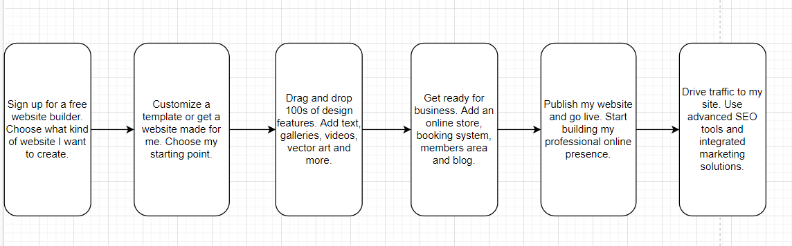
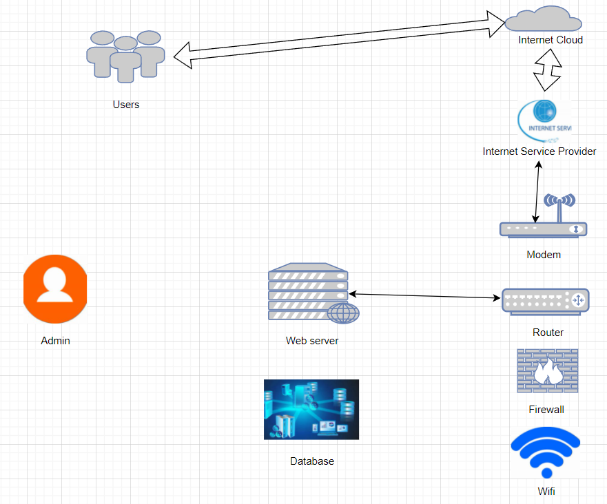
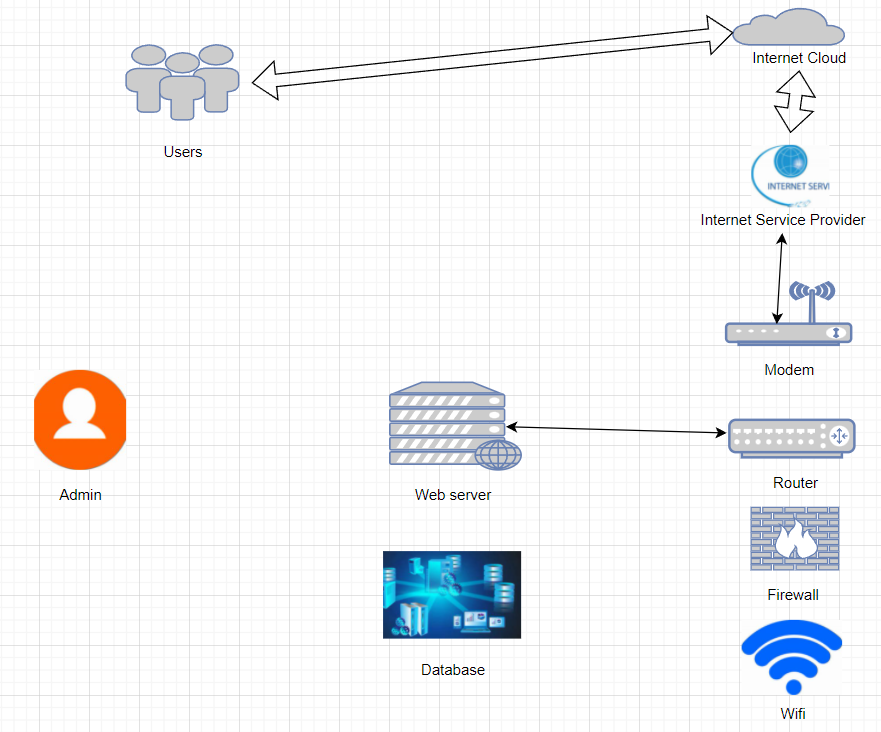

Article By: Mike
About Project
The process of design the website

System diagram

System diagram

| Server | DELL R400 1U |
| Hard disk | Western Digital UltrastarDC HC320 8TB |
| Router | TP-LINK TL-R473G |
| Database | Microsoft SQL server |
| Web editor | Dreamweaver |
| Web editor | Notepad++ |
| Logo Designer | Canva |
Project Name: Create a personal website
Hardware: Server, Hard disk, Router, Database
Software: Dreamweaver, Notepad++, Canva
In the process of creating this website, I can learn more basic knowledge related to the website, and by creating the website, I can also have a platform to show myself on the Internet, so that the public can know me more intuitively.
Methodology
I will use the Dreamweaver to design the website. Also, using Notepad and Canva to help me code better and make beautiful logo. And I will also use the server to connect the network and store information, use the database to store and share data, etc. Using hard disk to store data on electronic devices, use Router to provide wireless access to individual computers and other devices.